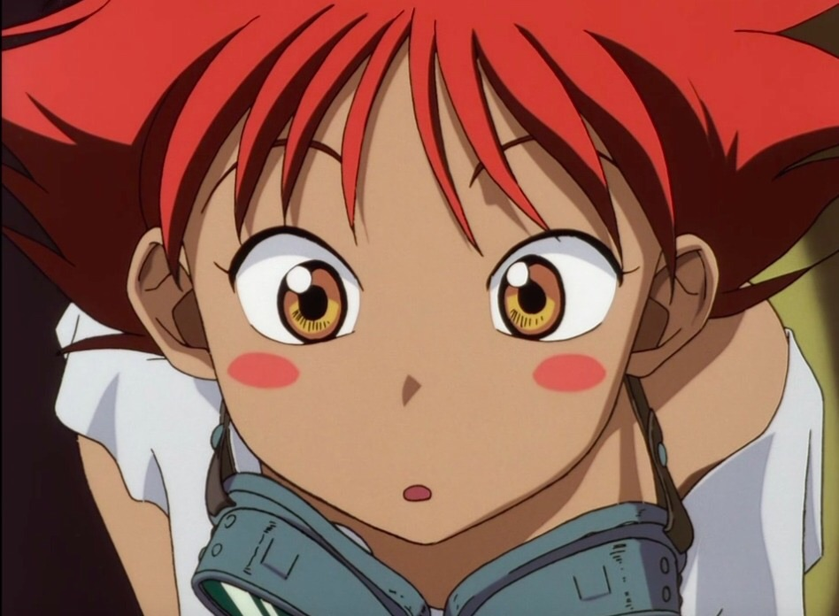

| Nome: Edward "Ed, Radical Ed, Françoise" Wong Hau Pepelu Tivrusky IV |
| Gênero: fem. | Altura: 1,37 | Vida: 3 | Vulgo: Ed |
| Idade: 10 | Peso: 32Kg | Fadiga: 7 | Defesa: |
| Características |
| FOR: 2(+1) | CON: 2(+1) | INT: 6(+3) | POD: 8(+4) | CAR: 6(+3) |
| DEX: 6(+3) | DET: 4(+2) | SAB: 2(+1) | SOR: 6(+3) | APA: 4(+2) |
|
Armas
|
| Estilingue |
Bônus: +2 |
| Poderes |
| Bala caótica |
Ação:p | Alcance: 18m | Duração: I |
Dispara uma pedrada que vai causar: (1D4)
1) Alvo perde movimento
2) Alvo perde ação
3) Alvo perde ação bônus
4) Alvo não pode usar magia
|
| Feitos |
| Sorte do dia |
|
| No inicio da seção role 1d4 e adicione o resultado em todas as suas rolagens ate o final da seção |
| Pericias |
| Acrobacia: 3+dex/for | Agarrar: dex/for | intimidar: car/apa | investigar: int/sab |
| Escalar: dex/for | Imobilizar: dex/for | Disfarce: car/apa | Medicina: int/sab |
| Dirigir: dex | nadar: for | blefar: car/sab | tecnologia: 3+int/sab |
| furtividade: dex | Puxar: for | Persuadir: car/apa | I.I: int/sab |
| Vassoura: 3+dex |
|
|
|
Historia: Des de que se conhece por gente Ana é sua mãe (obs.: Não sabe que é adotada) nunca soube quem é seu pai e so conheceu seus avos resentemente quando entrou na escola de bruxas
|
Espécie: Humano/███████
Tipo de magia: Anarcomancia
Mãe: Ana (Mãe adotiva)
Pai: ?
Aniversario: 15/08
Local de nasc.: ?
atualmente é: Estudante

|